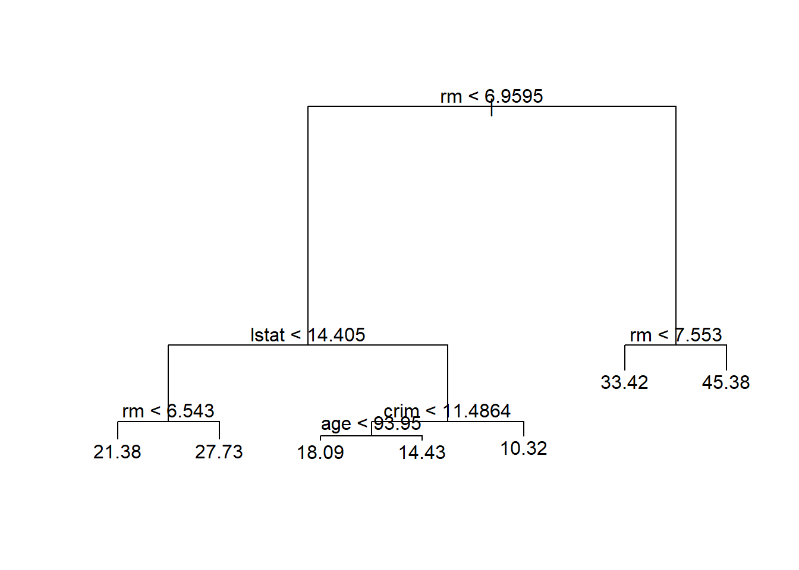
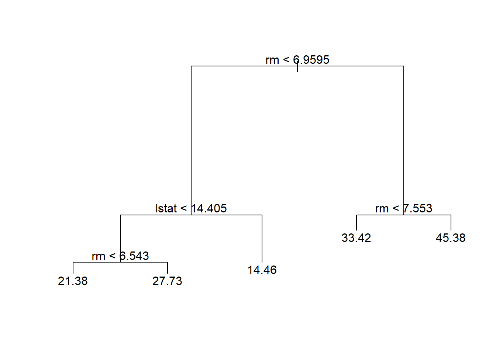
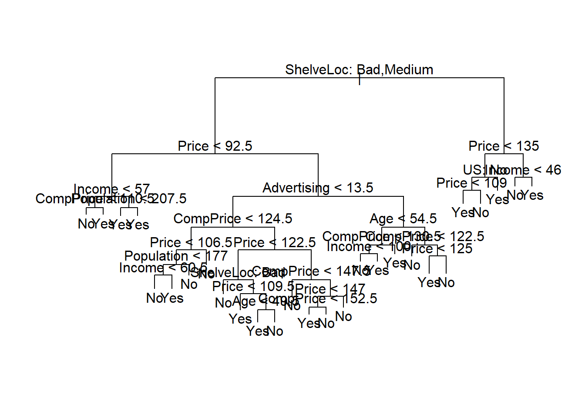
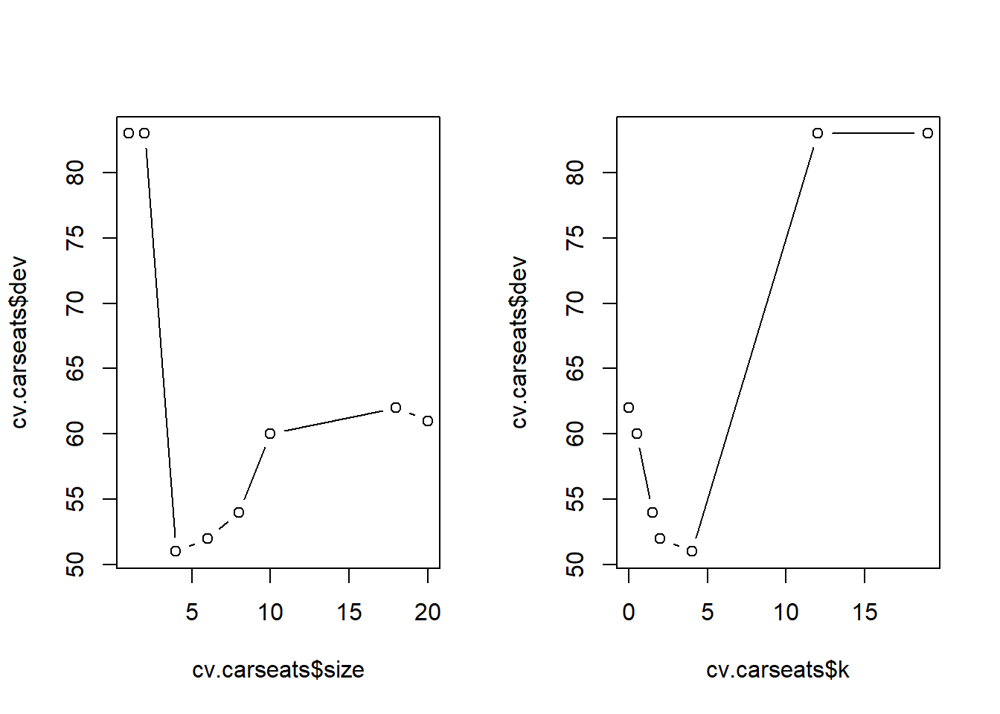
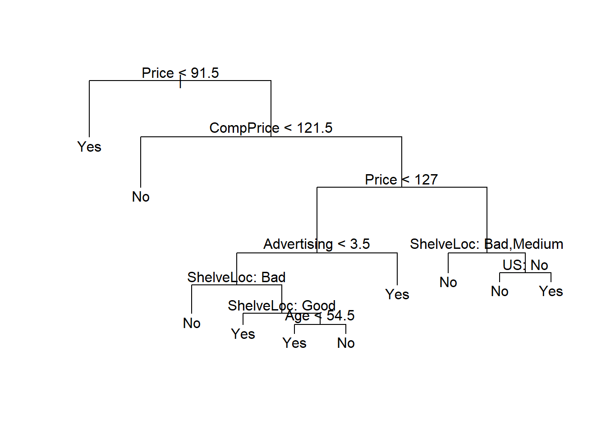

Chapter 8 Classification and Regression Trees
Segmenting the predictor space into a number of simple regions.
Develop a collection of splitting rules that make these segments.
The splitting rules can be thought of as “tree” (therefore, “decision trees”)
The root of the tree (i.e., the first splitting variable) is typically chosen based on the the smallest sum of squared residuals (SSRs), then the process begins again to choose another branch.
Decision trees can be used for both classification and regression, ergo the name CART
Under regression, the prediction is the average of the partitioned predictor space (i.e., segments)
Under classification, we classify based on the most prevalent class in each segment
Compared to linear models
If the underlying relationship is linear, the linear regression/ classification setting works better than CART
IF the underlying relationship is nonlinear and complex between the features and the response, the CART model can be better.
Issues:
Categorical predictors can prove to be difficult to implement CART when we have \(q >2\) possible unordered values of the predictors as there are \(2^{q-1} - 1\) possible partitions of the q values into 2 groups. Usually lead to over-fitting.
Missing predictor values:
- For categorical variables, we can make a separate category for “missing.” Or we can construct surrogate variables that mimic the split of the training data using only the non-missing variables
Non-binary splits: not recommended because it splits the data too quickly and doesn’t leave enough data for the next level of the tree
Linear Combination Splits: we can make linear combination of the variables to choose the splits (akin to PC-regression), which can help prediction, but reduce interpretation
Instability of trees: CART has high variance (i.e., a small change in the data can lead to different splits). To handle this problem, we can use “bagging” (i.e., bootstrapping procedure). This can happen even after you prune.
Lack of Smoothness: CART can lead to non-smooth prediction surface, which can be problematic for regression applications. The MARS procedure can be used instead
Additive structure: Since CART uses binary structure, it can’t accommodate additive structure, but MARS can
Trees do not have good predictive accuracy as other regression and classification approaches.
Advantages:
Easily explainable (to non-statisticians)
Decision trees may be closer to human decision making than traditional regression and classification
Trees are easily interpreted (with graphical depiction)
Trees can handle qualitative predictors without dummy variables
8.1 Regression Trees
Say we have \(p\) inputs and a response for each of \(n\) observations, \((x_i, y_i), i = 1, \dots, n\) with \(x_i = (x_{i1}, \dots , x_{ip})^T\)
Suppose that we have a partition of the predictor space into \(J\) regions \(R_1, \dots, R_j\) . Then, our prediction in each region is some constant, \(c_j\). Thus, we could write the response function as
\[ f(x) = \sum_{j=1}^J c_j I (x \in R_j) \]
where \(I(x \in R_j)\) is an indicator function (1 when \(x\) is in the j-th region, 0 otherwise).
Given the partitions, the estimate \(\hat{c}_j\) is the average of of \(y_i\) in \(R_j\)
\[\hat{c}_j = \hat{y}_{R_j} \equiv ave(y_i |x_i \in R_j)\] To find the partitions, we seek to divide the predictor space into high-dimensional rectangles (boxes) (i.e., we want to find the boxes \(R_1, \dots, R_j\) that minimize the residual sum of squares)
\[ \sum_{j=1}^J \sum_{i \in R_j} (y_i - \hat{y}_{R_j})^2 \]
where \(\hat{y}_{R_j}\) is the mean response for the training observations within the j-th box (e..g, \(\hat{c}_j\) )
Since we can’t consider every possible partition (computationally constraint), we seek binary partitions and specifically, a top down, greedy approach (i.e., at each step the best split is made at that step, once we make a split, we don’t go back and change it) known as recursive binary splitting.
8.1.1 Recursive Binary Splitting
Step 1: we select the predictors \(X_j\) and the cutpoints such that splitting the predictor space into the regions \(\{ X|X_j <s\}\) and \(\{ X | X_j \ge s\}\) leads to the maximum reduction in RSS (i.e., for any j and s, we define the regions (half-planes):
\[ R_1 (j,s) = \{ X|X_j <s\} ; R_2(j,s) = \{ X|X_j \ge s\} \]
and seek the value of j and s the minimizes
\[ \sum_{i: x_i \in R_1 (j,s)} (y_i - \hat{y}_{R_1})^2 + \sum_{i: x_i \in R_2 (j,s)} (y_i - \hat{y}_{R_2})^2 \]
where \(\hat{y}_{R_1} = \hat{c}_1\) is the mean response in \(R_1(j,s)\)
Notes:
When \(p\) is small, it’s computationally efficient to find values of j and s.
After the partition is selected, we repeat the process, looking for the best predictor (j) and best cut point (s) to split one of the two new regions to minimize the RSS, which will give us three regions. We continue to split one of these three regions to minimize the RSS
The stopping criterion is usually when a region contains fewer than some specified number of observations (because we have to the averages of these regressions for our mean response)
The end regressions of the tree \((R_1, \dots, R_J)\) are known as terminal nodes or leaves of the tree
The points along the tree where the predictor space is spit are internal nodes
Regression trees can usually lead to over-fitting on the test set, to reduce this problem, we can prune (i.e., remove leaves) to obtain a subtree using cross-validation.
8.1.2 Cost complexity pruning
- also known as weakest link pruning
Intuitively,
Calculate the total Sum of Squared Residual for each tree
Calculate a Tree Score: \(\text{Tree Score} = SSR + \alpha T\) where
SSR = Sum of Squared Residuals for the tree or sub-tree
T = number of leaves (or Terminal nodes) in the tree or sub-tree
\(\alpha\) = tuning parameter (based on cross-validation)
Pick tree with lowest tree score
The Tree Complexity Penalty (\(\alpha T\)) compensates for the difference in the number of leaves
Mathematically,
We first grow a very large tree \(T_0\). Instead of considering every possible subtree, we consider a sequence of trees indeed a non-negative tuning parameters, \(\alpha\) (i.e., for each value of \(\alpha\) there is a subtree \(T\) such that \(T \in T_0\) that minimizes
\[ \sum_{j=1}^{|T|} \sum_{i:x_i \in R_j} (y_i - \hat{y}_{R_j})^2 + \alpha |T| \]
where \(|T|\) is the number of terminal nodes
The parameter \(\alpha\) controls a tradoff between the subtree’s complexity and how well it fits the training data (\(\alpha = 0\) implies \(T = T_0\)). As \(\alpha\) gets larger, the penalty for a larger tree is higher, so it penalizes similarly to the Lasso regression. Moreover, as \(\alpha\) increases, the branches get pruned in a nested a predictable fashion. Hence, it’s possible to get the whole sequence of subtrees as a function of \(\alpha\) (based on cross-validation). After getting \(\alpha\) using cross-validation, we can use that value with the full data set to obtain the fitted subtree
8.1.3 Algorithm for regression tree
- Recursive Binary Splitting for growing a tree with your choice of stopping rule (e.g., observation-based)
- Use Cost complexity pruning to obtain a sequence of best subtrees as a function of \(\alpha\)
- Use K-Fold Cross-Validation to choose \(\alpha\)
library(ISLR2)
library(tree)
set.seed(1)
attach(Boston)
train <- sample(1:nrow(Boston), nrow(Boston)/2)
tree.boston <- tree(medv ~ ., Boston, subset = train)
# to fit a bigger tree
# tree.boston <-
# tree(medv ~ .,
# Boston,
# subset = train,
# control = tree.control(nobs = length(train), mindev = 0))
summary(tree.boston) # only 4 vars have been used (rm, lstat, crim, age)##
## Regression tree:
## tree(formula = medv ~ ., data = Boston, subset = train)
## Variables actually used in tree construction:
## [1] "rm" "lstat" "crim" "age"
## Number of terminal nodes: 7
## Residual mean deviance: 10.38 = 2555 / 246
## Distribution of residuals:
## Min. 1st Qu. Median Mean 3rd Qu. Max.
## -10.1800 -1.7770 -0.1775 0.0000 1.9230 16.5800deviance = sum of squared errors for the tree
plot(tree.boston)
text(tree.boston, pretty = 0)
cv.boston <- cv.tree(tree.boston) # tree complexity selected by cross-validation
plot(cv.boston$size, cv.boston$dev, type = "b")
If we want to prune complex tree
prune.boston <- prune.tree(tree.boston, best = 5)
plot(prune.boston)
text(prune.boston, pretty = 0)
yhat <- predict(tree.boston, newdata = Boston[-train, ])
boston.test <- Boston[-train, "medv"]
plot(yhat, boston.test)
abline(0, 1)
mean((yhat - boston.test) ^ 2) # Mean squared error ## [1] 35.28688The square root of the MSE is 5.9, meaning on average we predict within $5.9k of the true median home value.
8.2 Classification Trees
When we have a qualitative response we can use classification tree.
The main difference from Regression Trees is that we predict the response based on the most commonly occurring class in the region associated with that terminal node.
We may also be interested in the class proportion for each node when interpreting a classification tree
We grow a classification tree in the same manner as the Regression Trees, with Recursive Binary Splitting. However, instead of using RSS we use other measure related to the classification summary.
First we define the proportion of class \(k\) observation in the j-th node as
\[ \hat{p}_{jk} = \frac{1}{n_j} \sum_{x_i \in R_j} I(y_i = k) \]we classify an observation in node j to class k with the maximum value of \(\hat{p}_{jk}\)
The three measures for growing tree:
Classification error rate: \(1 - \max_{{k}} (\hat{p}_{jk})\)
- measures the fraction of the training observations in that region that do not belong to the most common class
Gini index: \(\sum_{k=1}^K \hat{p}_{jk}(1 - \hat{p}_{jk})\)
- measures the total variance across the K classes
Cross-Entropy or Deviance: \(-\sum_{k=1}^K \hat{p}_{jk} \log (\hat{p}_{jk})\)
- related to an information measures and the deviance
The Gini index and Cross-Entory both take small values when all \(\hat{p}_{jk}\) are close to 1 or 0. Hence, we say they measure node purity, which are more sensitive to node probabilities than the classification error rate. Hence, we typically use the last two to grow the tree.
Rule of thumb: use Gini and Cross-Entropy to build and prune a tree and use classification error rate for pruning if prediction accuracy of the pruned tree is the goal
library(tree)
library(ISLR2)
attach(Carseats)
High <- factor(ifelse(Sales <= 8, "No", "Yes")) # transform Sales (conitnuous) to binary variable
Carseats <- data.frame(Carseats, High)
tree.carseats <- tree(High ~ . - Sales, Carseats) # using all variables but Sales
summary(tree.carseats) # training error rate of 9%##
## Classification tree:
## tree(formula = High ~ . - Sales, data = Carseats)
## Variables actually used in tree construction:
## [1] "ShelveLoc" "Price" "Income" "CompPrice" "Population"
## [6] "Advertising" "Age" "US"
## Number of terminal nodes: 27
## Residual mean deviance: 0.4575 = 170.7 / 373
## Misclassification error rate: 0.09 = 36 / 400# tree.carseatsDeviance formula:
\[ -2 \sum_m \sum_k n_{mk} \log \hat{p}_{mk} \]
where
- \(n_{mk}\) = number of observations in the m-th terminal node in the k-th class
Smaller deviance is preferable (good fit to the training data).
Residual mean deviance formula
\[ \frac{-2 \sum_m \sum_k n_{mk} \log \hat{p}_{mk}}{n - |T_0|} \]
where \(|T_0|\) = number of terminal nodes
plot(tree.carseats)
text(tree.carseats, pretty = 0) # shelving location is the most important indicator 
Evaluation on both training and test data
set.seed(1)
train <- sample(1:nrow(Carseats), 200) # index 200 training datapoints
# get the test data
Carseats.test <- Carseats[-train,]
# get actual prediction
High.test <- High[-train]
tree.carseats <- tree(High ~ . - Sales, Carseats, subset = train)
tree.pred <- predict(tree.carseats, Carseats.test, type = "class") # return actual class predidction
table(tree.pred, High.test)## High.test
## tree.pred No Yes
## No 84 37
## Yes 35 44# correct prediction rate
(table(tree.pred, High.test)[1, 1] + table(tree.pred, High.test)[2, 2])/nrow(Carseats.test) # 64% correct predictions## [1] 0.64Tree with pruning
set.seed(7)
cv.carseats <- cv.tree(tree.carseats, FUN = prune.misclass) # cross-validation to get the optimal level of tree complexity (depth);
# prune.misclass = classification error rate guides the cross-validation and pruning process
# default = deviance guides the cross-validation and pruning process
cv.carseats## $size
## [1] 20 18 10 8 6 4 2 1
##
## $dev
## [1] 61 62 60 54 52 51 83 83
##
## $k
## [1] -Inf 0.0 0.5 1.5 2.0 4.0 12.0 19.0
##
## $method
## [1] "misclass"
##
## attr(,"class")
## [1] "prune" "tree.sequence"size = number of terminal nodes of each tree
k = \(\alpha\) = cost–complexity parameter.
dev = number of cross-validation errors
par(mfrow = c(1, 2))
plot(cv.carseats$size, cv.carseats$dev, type = "b")
plot(cv.carseats$k, cv.carseats$dev, type = "b")
It seems like 9 tree nodes have the lowest number of cv errors (dev in this case). Hence, we will pick this tree
set.seed(7)
prune.carseats <- prune.misclass(tree.carseats, best = 9)
plot(prune.carseats)
text(prune.carseats, pretty = 0)
tree.pred <- predict(prune.carseats, Carseats.test, type = "class")
table(tree.pred, High.test)## High.test
## tree.pred No Yes
## No 89 25
## Yes 30 56(table(tree.pred, High.test)[1, 1] + table(tree.pred, High.test)[2, 2]) /
nrow(Carseats.test)## [1] 0.725We can see slight improvement of prediction rate from 64 to over 70 percent
We can still increase the classification accuracy but with the price of tree complexity